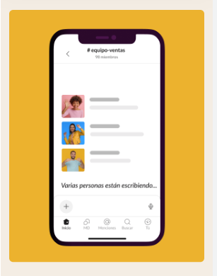
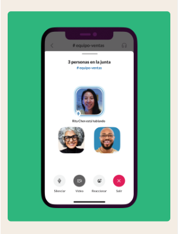

Mensajería comprometida
Slack está diseñado para el trabajo. Es la aplicación que te permite contactar con tu equipo rápidamente sin importar dónde estés.
Más información sobre las funciones de Slack Reúne a tu equipo
Los canales son el corazón de Slack. Son espacios organizados para todo el mundo que contienen todo lo necesario para trabajar.
Más información sobre los canales Selecciona cómo quieres trabajar
Puedes chatear, enviar clips de audio y vídeo o unirte a una junta para discutir asuntos en directo.
Obtén más información acerca de la comunicación flexibleEquipos grandes y pequeños confían en Slack
Slack se adapta de forma segura para garantizar la colaboración en las empresas más importantes del mundo.
CONOCE SLACK PARA EMPRESAS
HABLAR CON EL EQUIPO DE VENTAS